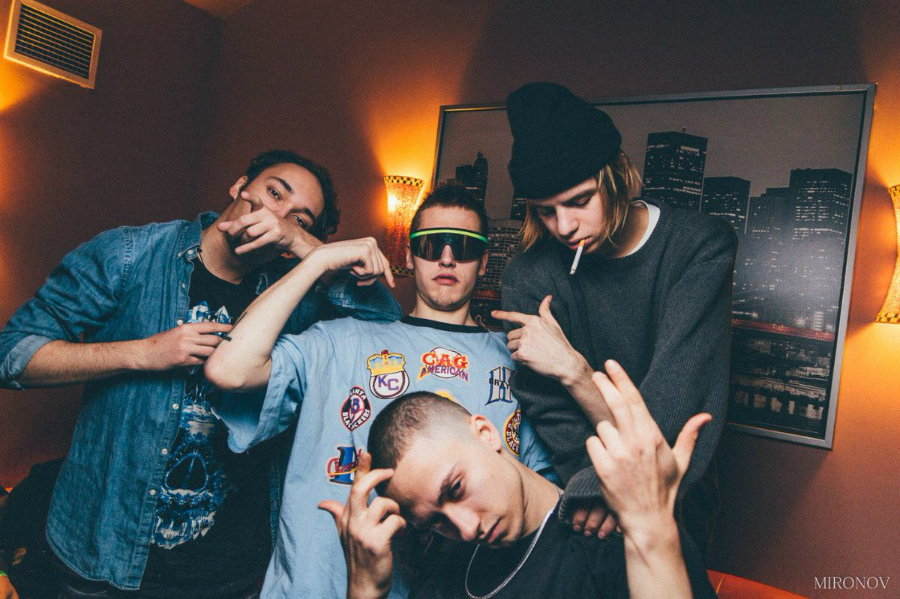

Артём Шатохин (1 июня 1991 года) - русский репер,известный на реп-сцене под псевдонимами:Boulevard Depo,Powerpuff Luv.Бывший участник объединения Dead Dynasty(2012-2016),периодически появляется на локальных концертах объединения Dopeclubworld. Родился Артём и проживал некоторое время в Уфе с родителями. Потом они переехали в Комсомольск-на-Амуре, затем снова в Уфу. Артём обучался в гимназии, увлекался граффити. Состоял тогда он в «Never Been Crew» — тематической тусовке, которая была посвящена граффити. В это время, Артём придумал себе псевдоним – Depo. Ещё в подростковом возрасте его стала интересовать музыка. В 10 классе он постепенно теряет интерес к граффити. Затем Артём решает, что хочет создать и записать что-то своё. Тогда он большую часть времени тусил с друзьями, покуривал лёгкие наркотики. Это стало неким толчком, который послужил к появлению его «укуренного» стиля.
click me!

ссылка на материал: (http://ktotakoj.ru/boulevard-depo)